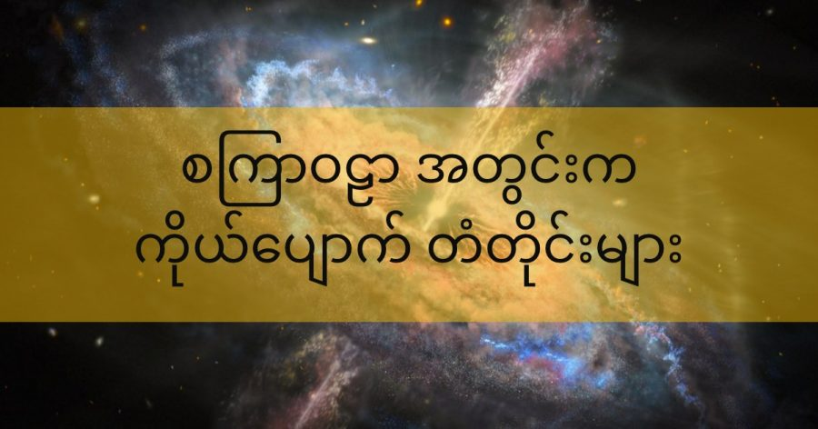

နက္ခတ် ပညာရှင်များ လက်ရှိ လက်ခံ ထားတဲ့ သီအိုရီ တွေအရဆို ဂလက်ဆီ ကြီးတွေရဲ့ အနားမှာ ရှိတဲ့ ဂလက်ဆီ ကြယ်စု အသေးလေး တွေဟာ ပင်မ ဂလက်ဆီ ကြီးရဲ့ ပတ်လည်မှာ အစီအစဉ် မရှိပဲ ကြုံရာကြပမ်း (random) ပြန့်ကျဲနေ ကြမှာ ဖြစ်ပါတယ်။
ဒါပေမယ့်တကယ့် လက်တွေ့ သုတေသန တွေ့ရှိချက် တွေအရတော့ ဒီ သီအိုရီ တွေရဲ့ ခန့်မှန်းချက်ဟာ မှန်ကန်မှု မရှိဘူး ဖြစ်နေပါတယ်။ အခုထိ တွေ့ရှိ ချက်တွေ အရဆို ဂလက်ဆီ အငယ်လေး တွေဟာ ပင်မ ဂလက်ဆီ ကြီးရဲ့ ပတ်လည်မှာ ဓါတ်ပြားဝိုင်း တစ်ချပ်ကို ညီညီညာညာ စီစီရီရီနဲ့ လှည့်ပတ် နေကြတာကို တွေ့ရှိ ရပါတယ်။
ဒီ ဂလက်ဆီ ငယ်တွေရဲ့ ပတ်လမ်းဟာ ဘာနဲ့ တူလဲ ဆိုတော့ ဆေတန် ဂြိုဟ် (စနေဂြိုဟ်) ရဲ့ ပတ်လည်က ကွင်းတွေလိုပဲ ညီညီညာညာ စီစီ ရီရီ ဖြစ်နေ ကြတာပါ။
ဒီအချက်က ဘာကို ညွှန်ပြနေ သလဲ ဆိုတော့ စကြာဝဠာ အတွင်းက ဂလက်ဆီ တွေရဲ့ ရွှေ့လျား လည်ပတ်မှုနဲ့ ပါတ်သက်ပြီး ကျွန်တော်တို့ နားလည် ထားတဲ့ သီအိုရီ တွေနဲ့ လက်တွေ့ ဖြစ်ပျက် နေတာ တွေနဲ့ ကြားမှာ ကွာဟချက်တွေ ရှိနေတယ် ဆိုတာပဲ ဖြစ်ပါတယ်။
တနည်း အား ဖြင့်တော့ သီအိုရီတွေကပဲ မှားနေလို့လား၊ ဒါမှ မဟုတ် မပြည့်စုံ လို့လား ဆိုတာ မေးခွန်း ထုတ်စရာ ဖြစ်လာ ပါတယ်။
ဒီ ကွာဟချက်ကို ဖြေရှင်း နိုင်ဖို့ နက္ခတ် သုတေသီ အချို့က သီအိုရီ အသစ် တစ်ခုကို တင်ပြ လာပါတယ်။
ယခု လက်ရှိ လက်ခံထား ကြတဲ့ သီအိုရီ ကတော့ Lambda cold dark matter (Lambda-CDM) model သီအိုရီ ပဲ ဖြစ်ပါတယ်။
ဒီ လက်ရှိ သီအိုရီ အရဆို စကြာဝဠာဟာ အခြေခံ အဖွဲ့အစည်း ၃ မျိုး နဲ့ ဖွဲ့စည်းထား တယ်လို့ ဆိုပါတယ်။
ပထမ အဖွဲ့အစည်း ကတော့ အိုင်းစတိုင်း စတင် အဆို ပြုခဲ့တဲ့ cosmological constant ခေါ် စကြာဝဠာ ကိန်းသေ ဖြစ်ပါတယ်။ ဒီ ကိန်းသေ ကို အိုင်းစတိုင်းက သူ့ရဲ့ နှိုင်းရ သီအိုရီ ညီမျှခြင်း (equation) မှာ ဖြည့်စွက် ထည့်သွင်း ခဲ့တာ ဖြစ်ပါတယ်။
ဒုတိယ အဖွဲအစည်း ကတော့ dark matter ခေါ် အမှောင်ဒြပ် ပဲ ဖြစ်ပါတယ်။ ဒီ အမှောင်ဒြပ် ပစ္စည်းတွေဟာ လက်ရှိထိ ရှာဖွေ တွေ့ရှိခြင်း မရှိ သေးတဲ့ အမှုန်လေးတွေ ဖြစ်ပါတယ်။ သူတို့ကို မမြင်တွေ့နိုင် ပေမယ့် သူတို့ရဲ့ ဆွဲငင်အား သက်ရောက် မှုရဲ့ အကျိုးဆက် ကိုတော့ လက်တွေ့ တိုင်းတာလို့ ရပါတယ်။
တတိယ ဖွဲ့စည်း ပါဝင်တဲ့ အရာကတော့ ကျွန်တော်တို့ ပတ်ဝန်းကျင်မှာ ပုံမှန် မြင်တွေ့၊ ထိတွေ့၊ ခံစား နေရတဲ့ သာမန် ဒြပ်ပစ္စည်း တွေပဲ ဖြစ်ပါတယ်။
ဒီ စံ သီအိုရီ အရ ဆိုရင် သေးငယ်တဲ့ ဂလက်ဆီ ငယ်လေးတွေဟာ ဂလက်ဆီ ကြီးတွေရဲ့ ဆွဲငင်အား ကြောင့် ရုန်းမထွက် နိုင်ပဲ ဂလက်ဆီ ကြီးတွေရဲ့ ပတ်ခြားလည်မှာ ပရမ်းပတာ နဲ့ လှည့်ပတ်နေ ကြမယ်လို့ ဆိုပါတယ်။
ဒါပေမယ့် လက်တွေ့ သုတေသန တွေ့ရှိ ချက် ရလဒ် တွေကတော့ ဒီ သီအိုရီရဲ့ ခန့်မှန်းချက်နဲ့ ကွာခြား နေပါတယ်။
အင်္ဂလန် နိုင်ငံ နော့တင်ဟမ် တက္ကသိုလ် (University of Nottingham) က ရူပဗေဒ ပညာရှင် နှစ်ဦးက ဒီ ပြဿနာကို ဖြေရှင်းဖို့ သီအိုရီ တစ်ရပ်ကို အဆိုပြု တင်ပြ လာပါတယ်။
သူတို့က ပဉ္စမမြောက် အား (fifth force) တစ်ခုကို အဆိုပြု တင်ပြ လာပါတယ်။
သူတို့ရဲ့ သီအိုရီ အရ ဒီ ပဉ္စမ အား ဟာ ဂလက်ဆီ အငယ်တွေကို ပင်မ ဂလက်ဆီ ကြီးရဲ့ပတ်ခြာလည်မှာ ဓါတ်ပြားဝိုင်းကြီး တစ်ခုလို အစီအစဉ် နေရာတကျ ဖြစ်အောင် စီစဉ်ပေးတယ် လို့ ဆိုပါတယ်။
သူတို့က ဒီ ပဉ္စမ အား ဖန်တီး ပေးတဲ့ Symmetron (ဆမ်မီထရွမ်) ဆိုတဲ့ အမှုန် တစ်မျိုးကို အဆိုပြုခဲ့ ကြပါတယ်။ ဒီ symmetron အမှုန်ဟာ အပေါ်က ပြောခဲ့တဲ့ ပဉ္စမ အား ကို ထုတ်ပေးတယ်လို့ ဆိုပါတယ်။
ဒီ ထုတ်ပေးတဲ့ ပဉ္စမ အားဟာ အာကာသ ဟင်းလင်းပြင် ထဲမှာ မမြင်ရတဲ့ နံရံ တံတိုင်း တစ်ခုကို ဖန်တီး ပေးနေတယ်လို့ ဆိုပါတယ်။ ဘာနဲ့ တူလဲ ဆိုတော့ သံလိုက် စက်ကွင်းက သံတို သံစ တွေကို ဆွဲပြီး အတားအဆီး တစ်ခု ဖန်တီး ပေးသလိုပေါ့။
ဒီ နေရာမှာ တံတိုင်း လို့ သုံးနှုန်း ပေမယ့် တကယ်ဆိုလို ချင်တာက မျက်စေ့နဲ့ မမြင်နိုင်တဲ့ အားစက်ကွင်း တစ်ခုကို ဆိုလိုတာ ဖြစ်ပါတယ်။
ဒီ သီအိုရီကို အဆိုပြုတဲ့ သိပ္ပံ ပညာရှင် တွေကတော့ လက်ရှိ လက်ခံ ထားကြတဲ့ dark energy အမှောင်စွမ်းအင် နဲ့ dark matter အမှောင်ဒြပ်တွေ ကနေ ဒီ ဂလက်ဆီ ငယ်လေးတွေ စည်းကမ်း တကျ ရှိဖို့ လိုအပ်တဲ့ စွမ်းအားတွေ မထုတ် ပေးနိုင်ဘူး လို့ ဆိုပါတယ်။ ဒါ့ကြောင့် ဒီ စွမ်းအား ထုတ်ပေးနိုင်မယ့် ဒြပ်မှုန် အသစ် လိုအပ်လာတာ ဖြစ်တယ်လို့ ရှင်းပြ ပါတယ်။
ဒီ symmetron အမှုန်တွေဟာ သံလိုက် တောင်-မြောက် လိုမျိုး၊ လျှပ်စစ် ဖို-မ ဓါတ်လိုမျိုး မတူညီတဲ့ အခြေအနေ နှစ်မျိုးနဲ့ တည်ရှိ နေနိုင်တယ်လို့ ဆိုပါတယ်။ ဒီ မတူညီတဲ့ အခြေအနေ ရှိတဲ့ symmnetron အမှုန်တွေ အကြား အပြန်အလှန် သက်ရောက်မှုက နေ မမြင်ရတဲ့ ကိုယ်ပြောက် တံတိုင်းတွေ ဖြစ်ပေါ်လာတယ်လို့ ဆိုပါတယ်။
တကယ်တော့ ဒီ symmetron အမှုန် အယူအဆဟာ အသစ်အဆန်း တော့ မဟုတ်ပါဘူး။ ဒါပေမယ့် အခု သီအိုရီက အဆိုပြု တာက စကြာဝဠာ အတွင်းက အချို့ ဒေသတွေမှာ symmetron အဖို တွေ စုမိပြိး အချို့ ဒေသ တွေမှာတော့ symmetron အမတွေ စုမိလာမယ်လို့ ဆိုပါတယ်။
ဒီ အဖို ဒေသနဲ့ အမ ဒေသ တွေ ဆက်စပ်တဲ့ နယ်ခြား နေရာ တွေမှာ အဖို-အမ အားသက်ရောက် မှုတွေကြောင့် မမြင်ရတဲ့ တံတိုင်းတွေ ဖြစ်ပေါ် လာမယ်လို့ ဒီ အဆိုပြု ချက်က ဆိုပါတယ်။
လက်ရှိမှာ ဒီ သီအိုရီရဲ့ အဆိုပြုချက် တွေကို ကွန်ပြူတာ simulation အသုံးပြုပြီး စမ်းသပ် ကြည့်ခဲ့ ကြပါတယ်။ ဒီ ကွန်ပြူတာ စမ်းသပ် မှုမှာ သီအိုရီက ခန့်မှန်း သလိုပဲ ကိုယ်ပြောက် တံတိုင်းတွေ ဖြစ်ပေါ် လာတယ် ဆိုတာကို တွေ့ရှိ ကြရပါတယ်။
ဒါပေမယ့် ဒီ သီအိုရီကို အများ လက်ခံ လာဖို့ ဆိုရင်တော့ နောက်ထပ် သက်သေ အထောက်အထားတွေ အများကြီး လိုအပ်နေ သေးတယ် ဆိုတာကိုတော့ သီအိုရီကို အဆိုပြု ကြတဲ့ ပညာရှင် တွေက ဝန်ခံ ထားပါတယ်။
Ref: Can dark energy be explained by symmetrons?
စကြာဝဠာ အတွင်းက ကိုယ်ပျောက် တံတိုင်းများ

May 25, 2022
Other Posts
- James Webb ရဲ့ ကြည်လင် ပြတ်သားသော ပုံရိပ် နာဆာထုတ်ပြန်
- အမျိုးသားများ၏ ဝိုင်ခရိုမိုဆုမ်း မျိုးတုန်း ပျောက်ကွယ်မည့် အန္တရာယ် ရှိနေ
- ဂလက်ဆီ နှစ်လုံး တိုက်မိတဲ့ ဓါတ်ပုံ
- မစ်ကီးဝေး ဂလက်ဆီရဲ့ အလယ်မှာ ဘာရှိလဲ
- Dark Energy ရှာတွေ့ပြီလား
- တောင်ကိုရီးယား တပ်မတော်ရဲ့ ၈၁ မမ မော်တာအသစ်
- အလင်းကို ဒြပ်အဖြစ် အောင်မြင်စွာ ပြောင်းနိုင်ပြီ
- ကမ္ဘာကြီး လည်နေတယ်ဆိုရင် ဘာ့ကြောင့် ကျွန်တော်တို့ မသိရတာလဲ
- ရှေးအီဂျစ် နတ်ဘုရားကျောင်းအောက် ဥမင်လှိုဏ်ခေါင်းကြီး တစ်ခု ရှာတွေ့
- မစ်ကီးဝေး ဂလက်ဆီ ထဲမှာ သက်ရှိတွေ ရှိနေနိုင်တဲ့ ဂြိုလ်ဘယ်လောက်များလဲ